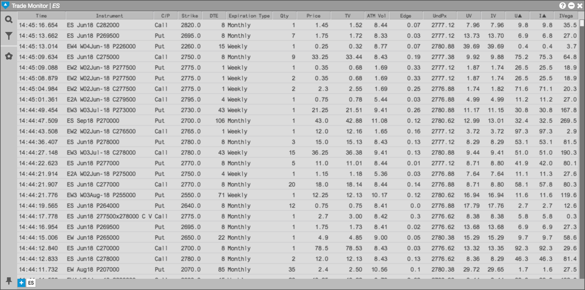
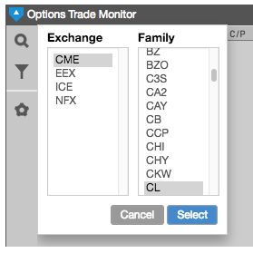

The Options Trade Monitor widget displays all real-time and historical trades that occur for a selected family of products and provides details for each trade. By showing the trades for a product family, the Options Trade Monitor lets you easily see trades for all options associated with the product. For example, the following Options Trade Monitor shows the trades for the CME ES family, which includes a variety of options (EW, EW1, ES, etc.).

You can open an Options Trade Monitor from the Widgets menu.
Select Options Trade Monitor from the Widgets menu.
In the Market Explorer, select the desired Exchange and Family and click Select.
